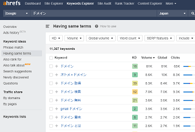

ドメインのチェックツールを比較
ドメイン名の価値をチェックするには「EstiBot」や「GoDaddy」などのツールがありますが、そちらでは辞書に載っているような一般的な単語でのドメイン名が高額化する傾向にあります。この場合、ドメイン名の希少性や過去の売買実績などで市場価値が判断されることになります。
一方、長いドメイン名で価値がないと判断された場合でも、ドメインの被リンク数が多く、SEO対策上のメリットがある場合も一定の需要があります。
このドメインのSEO上の強さをチェックする場合、「ahrefs」や「Moz」などの有料ツールがおすすめです。こちらはクローラーが実際にサイトに訪問してリンク関連をデータ化している有料ツールになります。
ahrefs（エイチレフス）で被リンクの調べ方
人気のドメインチェックツールにはahrefs（エイチレフス）があります。
→ ahrefs
こちらは１週間のお試しで7ドル、その後は月額料金99ドルから利用できますが、「Site Explorer」や「Keywords Explorer 」などの機能があり、ドメインの強さやキーワードの検索ボリュームをチェックすることができます。
- Site Explorer → ドメインの強さや被リンク数
- Keywords Explorer → キーワードの検索ボリューム
- Content Explorer → 人気コンテンツのチェック
当ホームページではアクセスログでWebクローラーの比較をしており、ahrefsの「AhrefsBot」についてもよく見かけましたが、クロールの頻度が多かった印象があります。
ただし、サイトによっては.htaccessでクロールを拒否しているケースもあるはずなので、全てのデータが反映されているわけではありませんが、ahrefsについては比較的、精度が高いと感じています。
Site Explorerの「DR」でドメインの強さをチェック
ahrefsでドメインの強さをチェックする際、「Site Explorer」の箇所から「DR」 (Domain Rating)などの指標で調べることができます。
当サイト運営者は利用回数の上限まで使い切ってしまったため、何も表示されなくなってしまいましたが、こちらでチェックするとドメインの強さの「DR」やURLの強さの「UR」、あるいは被リンク数などが表示されます。
現在、Googleのページランクはツールバーでのチェックができないため、ページランクの代替ツールとして使えるかもしれません。また、ヤフーのlinkドメインコマンドも使えなくなってしまいましたので、被リンクをチェックするのにも使えるかと思います。
今回、ドメインの売却をしようとしていたのですが、Godaddyの査定では100ドル未満だったものの、こちらのahrefsのツールではDR40ぐらいが付いていたため、もったいないので止めました。
ahrefsのツールを使えば、そのようなドメインを売却する際の判断材料になるかと思います。
ダッシュボードに自サイトを登録してチェック
ahrefsのダッシュボードで「新規プロジェクト」に登録しておくと、自サイトの情報についても詳細にチェックしてくれます。
当ホームページについては、2018年あたりに被リンク数が急増していた痕跡があったのですが、これはもしかしますとネガティブSEOを受けていたのかもしれません。
今となっては詳細がわかりませんが、自サイトの状態を把握するのにも便利かと思います。
また、検索キーワードについてもチェックできました。
たまたまですが、自サイトではHTMLタグ「a href」のキーワードでのアクセスが多く、こちらのツールの「ahrefs」とはキーワード的にかぶるのかもしれません。
Keywords Explorerで検索ボリュームをチェック
「Keywords Explorer」の機能では、特定のキーワードでの検索ボリュームもチェックすることができます。

ドメインのチェックツールには、MozやMajesticなどもありますが、検索キーワードのチェックについては、こちらの「ahrefs」の方が使いやすい印象があります。検索ボリュームの多いキーワードで新規ページを作成すると、アクセスアップにつながるかもしれません。
そのほか、「Content Explorer」では人気の記事のコンテンツなどをチェックすることができます。
ドメインは一度チェックすれば用が足りますので、そう何度も使用するわけではありませんが、機会があれば一度チェックされてみることをおすすめします。
Mozの「Link Explorer」で被リンクをチェック
こちらも有料ツールにはなりますが、Mozの「Link Explorer」でもチェックすることができます。こちらは少し料金が高めですが、30日間のお試し期間があります。
→ Moz
こちらのツールではドメインをチェックできるほか、自サイトを登録しておくと改善点なども指摘してくれます。当ホームページでは、正規ページにはrelカノニカルの正規化タグは設置していませんでしたが、改善点などをひと通り指摘してくれます。
Link Explorerでドメインオーソリティーをチェック
Mozでは「DA」（Domain Authority）の指標がありますが、ドメインの権威性が数値化されて表示されます。チェックする際は「Link Explorer」の箇所から調べることができます。
Webクローラーの比較では「DotBot」のユーザーエージェント名でしたが、定期的に巡回してはリンクをチェックしているようです。
Mozは海外サイトのため日本語には対応していませんが、把握しているリンクの数については、ahrefsよりもこちらの方が多い印象があります。
例えば、example.comでチェックしてみたところ、参照ドメイン数がahrefsが「158K」に対し、Mozは「242.6k」でしたが、おおむねMozの方がリンク数が多いと感じています。
Spam Scoreでスパム度数をチェック
また「Spam Score」という指標もあり、ドメインを売買する際の判断材料になります。
ただ、この指標は以下のような内容となっており、コンテンツが薄いとか広告掲載やタグマネージャーを使用していないなど、おおむね手間のかかっていない場合にスパムの指標が高くなるようです。

ただ、スパムサイトからの被リンクはごく一般的なため、無視しても影響を受けることはほぼないと考えています。上記のように１週間に数十本の単位でリンクされたり、外されたりは日常茶飯事ですので、リンク否認ツールなどで対応してもキリがありません。
むしろ、その他の要因でランキングに影響するケースが多いと感じています。
■Keyword Explorer
また、Mozにもキーワードのチェックツールがありますが、日本語には対応していないためか、こちらについては「ahrefs」の方が使いやすいかもしれません。